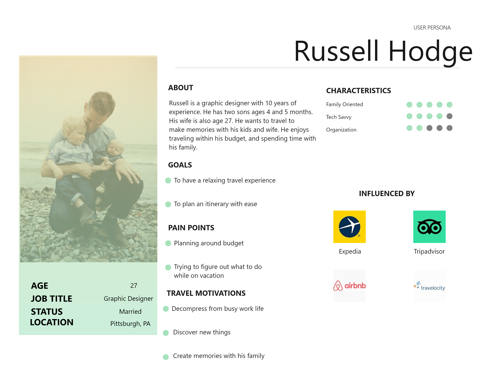
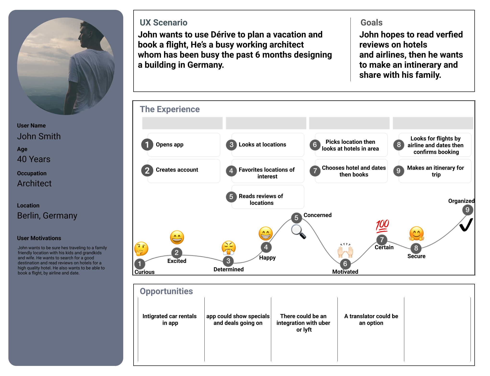
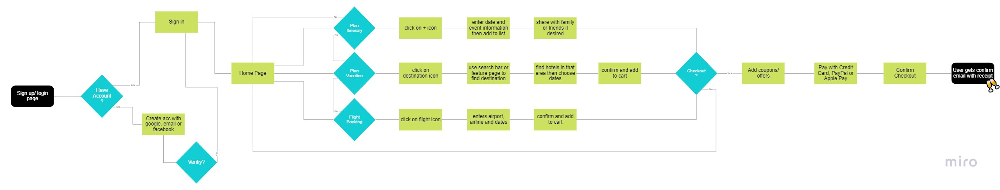
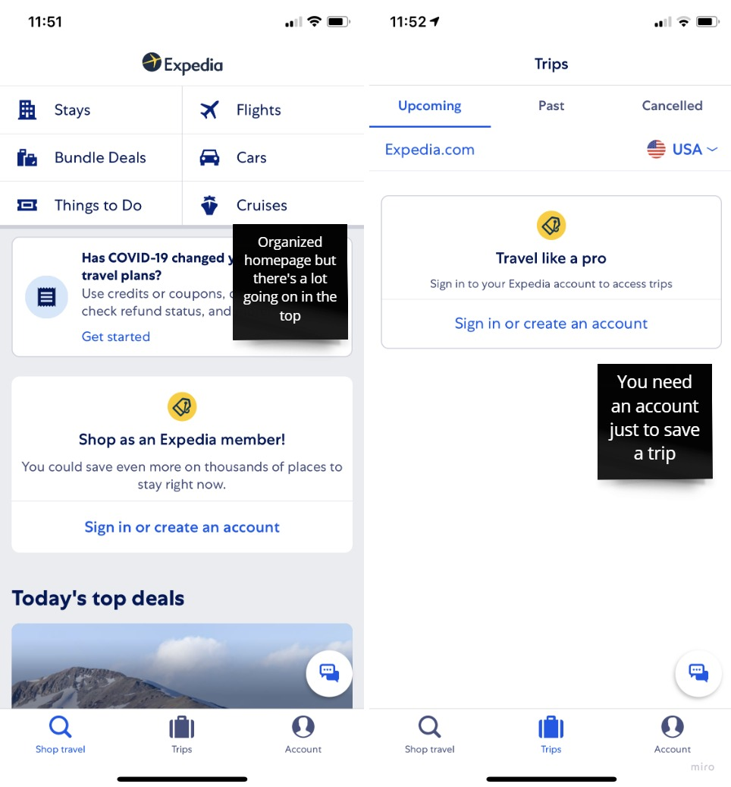

Unplanned Journeys
For my first design challenge I was tasked with making a travel app. The start-ups goal was to launch a modern day mobile app. My tasks were:
In this research project I conducted 5 interviews with individuals whom have kids and travel as a family or travel as a family with their own parents.
Based on the interviews and my affinity diagram I set up one persona. I referred to them throughout the entire product development process.
Russell Hodge needs a way to to plan a family vacation quick and easily because he is always busy from work and doesn’t have much time to search for destinations due to his busy schedule. Busy parents need to find ways to spend quality time together with the kids as a way to decompress and take a break from everyday life. Going on vacations are a great example of spending quality time together.
I made this user journey map to understand what John was going through when opening my app to understand some of his thoughts and feelings to make a better product from this.
I created this user flow chart to show the different pathways a user can take while using my app. The flow chart begins when a user first downloads Dérive, then continues with if you already have an account you c an sign in. The next part was to show they can sign up with their email or social media account, or just go to the sign in option, then that leads them to the homepage. From the homepage they can do 3 things, plan itinerary, click on destination icon to find hotels in that destination, or click on a flight icon to book a flight. If users are ready they can checkout or they can go back and add another option for example if they book a hotel and want to then book a flight they are able to go back and do so. After they checkout they are able to add coupons or offers and pay with their credit card or Apple pay or PayPal then confirm the checkout and then they would get a verification email.
I did a competitor analysis charts to apps and websites similar to my idea for Dérive. I compared the other companies strengths and weaknesses to Dérives strengths and weaknesses.
This was a quick analysis of TripAdvisor, and I left my thoughts on the sticky notes about what I did or did not like.
My objective for conducting this test is to find current pain points with my prototype.
My target users are working families from ages 25-50, who travel spontaneously and don’t have a lot of time to search for destinations due to being busy with work.
I hope you enjoy and have fun playing around with my prototype. ❤😊
This Project was an eye opening experience for me. It taught me that UX is not only just design but research too! Research, Data, Analyzing, and Testing, with data or facts to back up every design choice you make. I learned Users are SUPER important to creating a design because something that may make sense to you such a button or icon may not make sense to the User. User Research is the foundation of UX Design and supports strong design solutions. I’ve come to appreciate the work behind every app and website design.